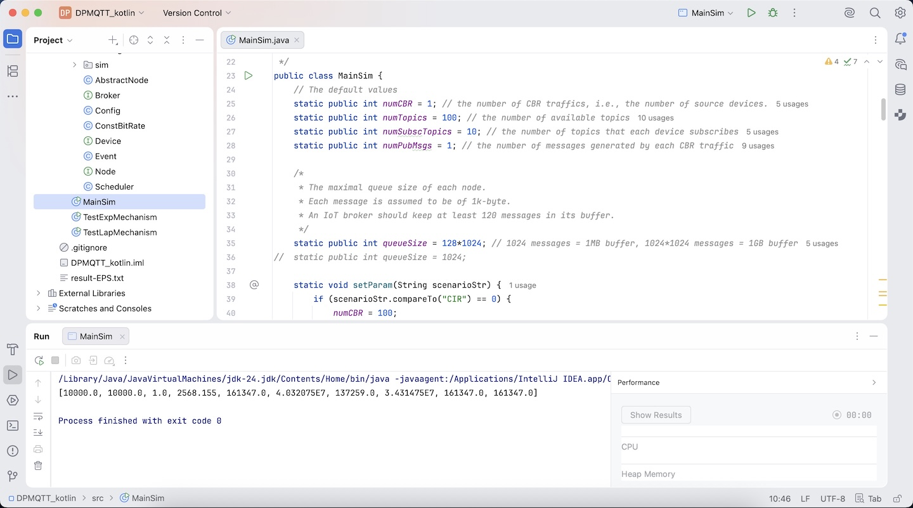
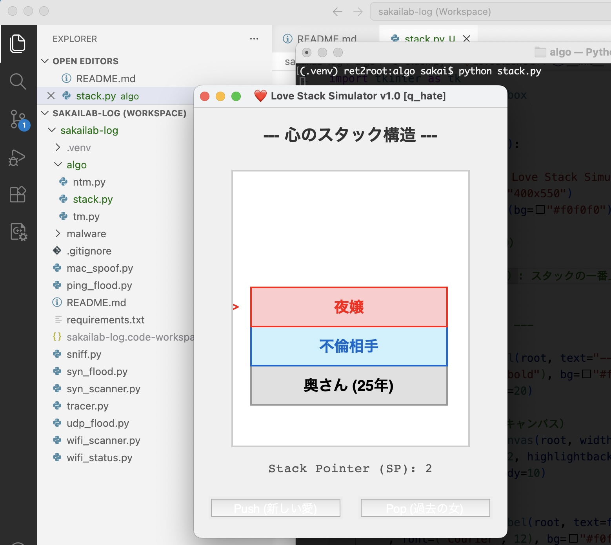
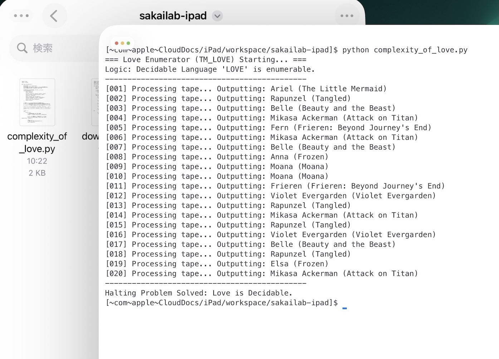
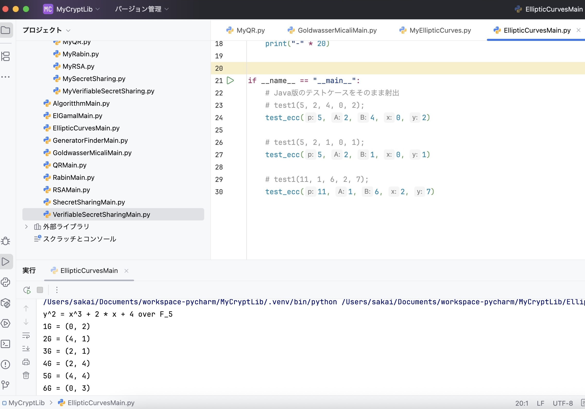
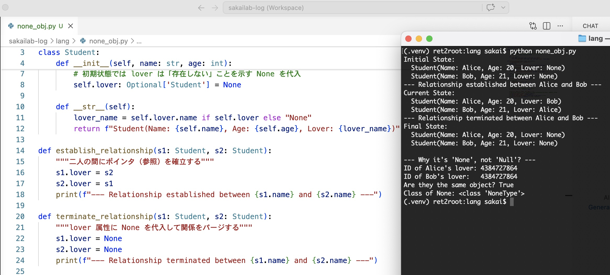
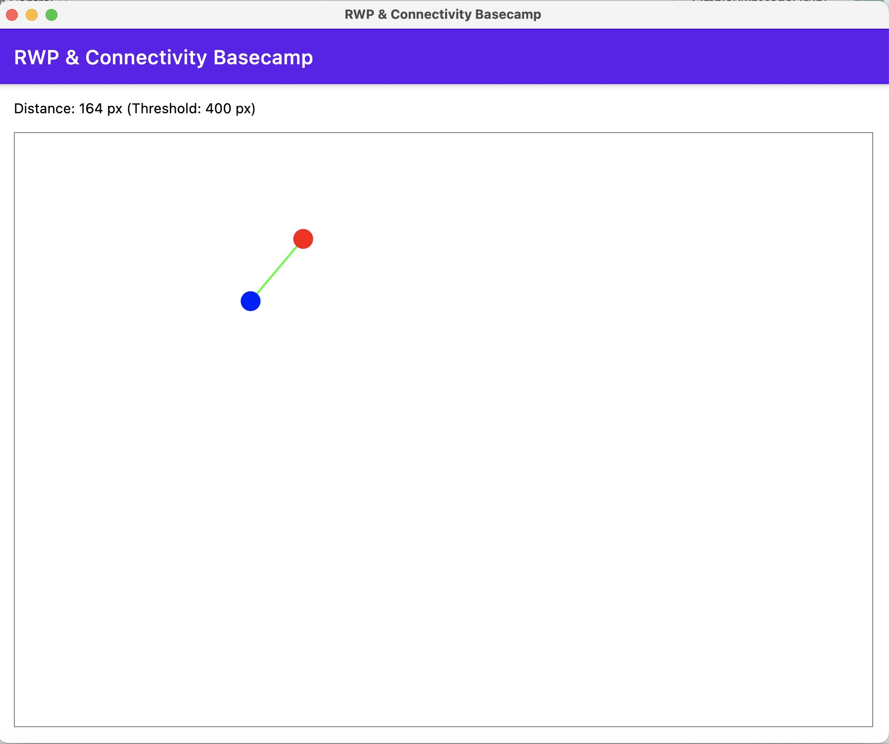
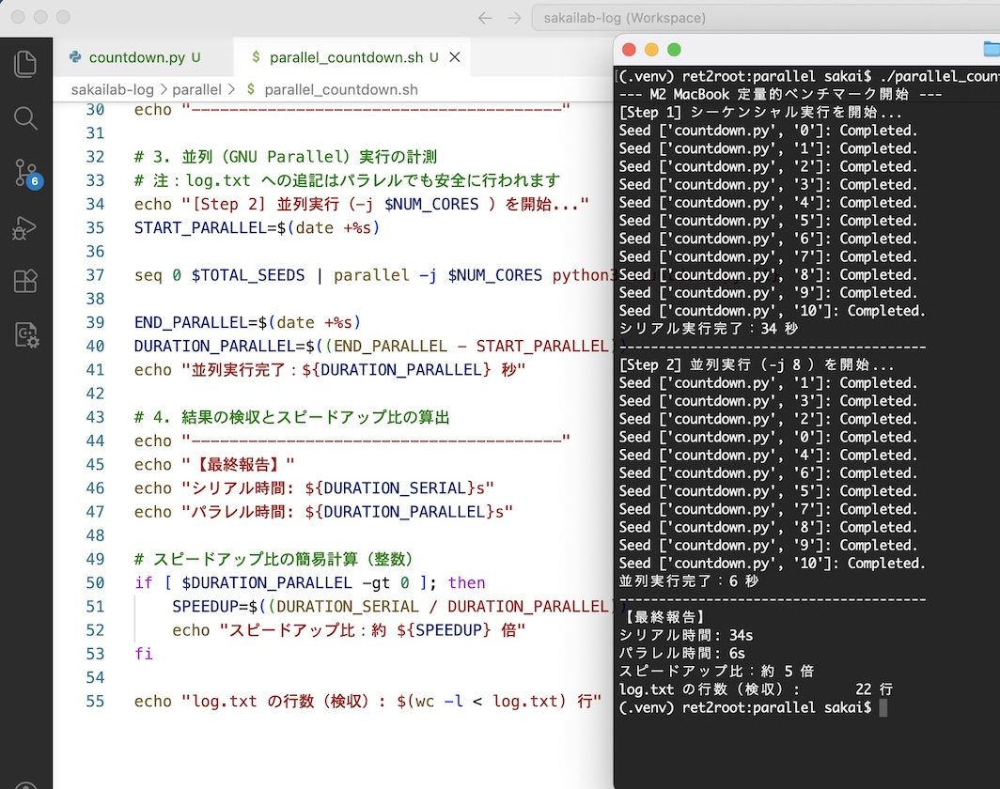
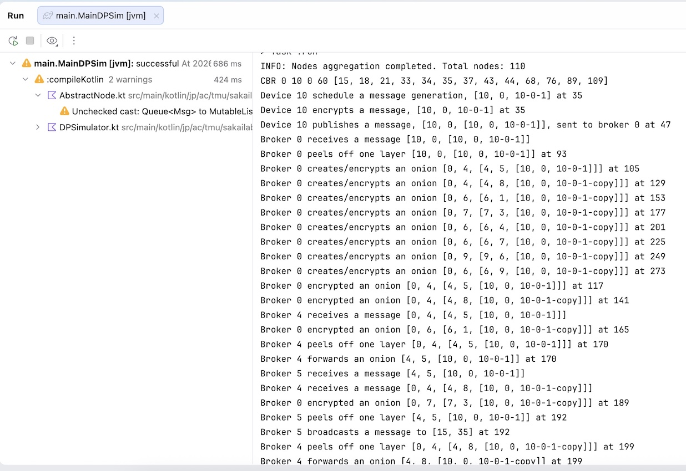
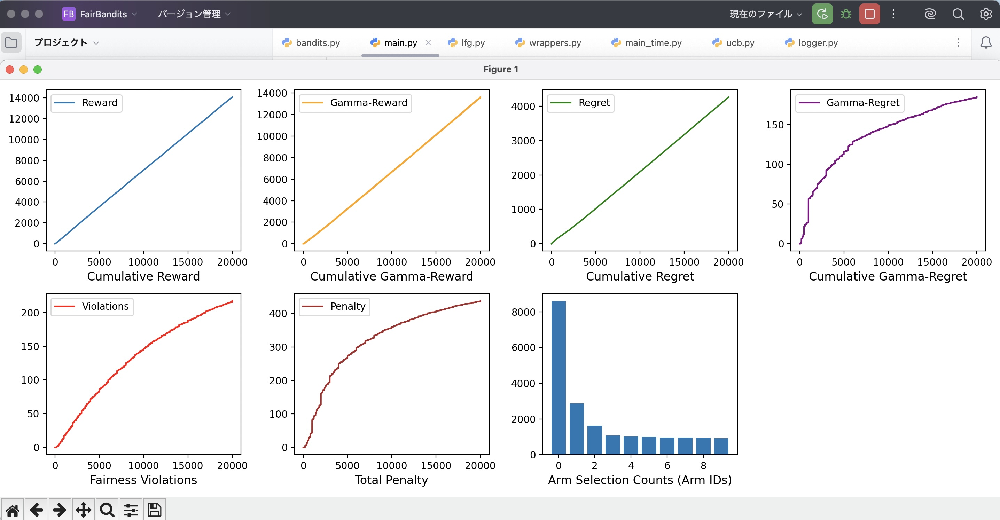

← Professor's Log Archive Index
$git clone https://github.com/kazuyasakai/sakailab-log.git
LOG_ENTRY #041 // IDE_DIVORCE_AND_REBIRTH - 2026.05.05
Log #041: 25年の訣別 ―― Eclipse との離婚と IntelliJ IDEA への「再婚」
Old IDE: Eclipse (1990s-2025) / New IDE: IntelliJ IDEA (JetBrains)
25年間、病める時も健やかなる時も、私は Eclipse と共にあった。

IntelliJ の洗練された UI。JDK-24 という最先端の鼓動を、今、確実に刻んでいる
💎 JetBrains がもたらす「知的な誘惑」
今、私の眼の前には JetBrains の IntelliJ IDEA がある。Process finished with exit code 0。
この一文が、私の新しい「愛の証明」だ。
📉 レガシーからのデタッチ
「昔の恋人は税金の書類と同じだ（Log #033）」と教えながら、私自身が 25 年前のツールに執着していたのだから、笑えないジョークだ。numTopics = 100; numPubMsgs = 1;
「道具の変更は、思考の転換に他ならない」MainSim は、今、全く新しいウィンドウの中で、かつてない軽やかさで起動した。
"Go West!" ―― 25年の歳月は attic（屋根裏）へ。運命の IntelliJ は、今、私の指先に「爆速の未来」を約束している。
LOG_ENTRY #042 // STACK_OF_HEART - 2026.05.06
Log #042: 恋心はスタック構造である ―― SP（スタックポインタ）の指し示す背理法
Simulator: Love Stack Simulator v1.0 [q_hate] / Protocol: LIFO (Last-In, First-Out)
スターバックスの静寂した空間でモーニングコーヒーを飲む休日の朝、私は驚くべき真理に辿り着いた。「恋心はスタック構造である」 push される。

Stack Pointer (SP): 2 ―― 恋心は常に最上位のデータを参照する
💔 スタックポインタが語る「背理法」の真実
結婚生活が数年続くと、不測の割り込み（Interrupt）により職場のあの子が「不倫相手」としてプッシュされる。このとき、諸君のスタックポインタ（SP）は必ず不倫相手を指している。
スライド（暗号論06_MAC.pdf）の「完全性」が損なわれた状態だ。背理法で考えれば明白だが、もし SP が「奥さん」を指しているならば、不倫関係というデータはすでに pop されているはずなのだ。SP が不倫相手を指している以上、奥さんへのアクセスパスは論理的に遮断されている。
💸 揮発性の夢と、回帰するポインタ
さらに数年後、大成功を収めた諸君の心は銀座のネオンに支配され、スタックの一番上に「夜嬢」がプッシュされる。しかし、このデータはお金という名のセッションキーで維持される一時的なものだ。
夢の時間が終わり、セッションが切断されれば、データは即座にポップされる。すると SP は再び「不倫相手」を指し、さらにその不倫関係を解消（Pop）して初めて、諸君の恋心は再び生涯の伴侶を指し示すことになるのだ。
「愛の階層構造は、メモリ管理の厳格なアルゴリズムに従う」pop 命令は、今、後悔という名の例外処理を待ち受けている。
"Go West!" ―― 恋心（SP）は常に移ろい、しかしデータは底に積み重なる。運命のスタックは、今、君の倫理観という名のメモリを消費し続けている。
LOG_ENTRY #043 // ENUMERABILITY_OF_LOVE - 2026.05.07
Log #043: 愛の判定可能性 ―― 列挙装置が証明した決定的な情動
Theory: Decidable vs Recognizable / Apparatus: Love Enumerator (TM_LOVE)
アルゴリズム解析の授業で諸君に説明した通り、チューリング機械には「認識可能（Recognizable）」と「判定可能（Decidable）」の残酷な境界線が存在する。
もし愛が単なる認識可能に留まるなら、私たちは愛する対象を前にして、永遠に「停止（Halt）」できない無限ループに陥るだろう。
だが、私は今日、M4 iPad Pro の a-Shell 上で、愛が判定可能であることを実験的に証明したのだ。

Processing tape... 20名の聖母を列挙し、機械は有限時間内に停止した
🌸 判定可能言語 L = { Anna, Elsa, フリーレン, ... }
画像を見たまえ。列挙装置は「Ariel」から始まり、「Anna」「フリーレン」「ミカサ」と、私の論理回路が受理した文字列を次々とテープ（stdout）に書き出している。
重複を許しながらも、最終的に Halting Problem Solved というメッセージと共に停止した。
これは、私の愛が計算不能なカオスではなく、有限のリソース内で定義された「判定可能なアルゴリズム」であることを意味している。
⚖️ 列挙装置がもたらす「平和」
もし愛が判定不可能（Undecidable）であれば、私たちは「不倫相手」という入力を前に、受理も拒絶もできず、人生という名の CPU を 100% 消費し続けることになっただろう。
だが、列挙装置が存在する以上、私は自分の愛する対象をすべて辞書順に並べ、スライド（暗号論07_Hash.pdf）のハッシュ値のように管理することができるのだ。
諸君、これが「アルゴリズム解析」を学ぶ真の意義だ。情動さえも、列挙（Enumerate）できれば制御可能（Decidable）なのだ。
「愛を計算せよ。停止しない愛は、ただのバグだ」
"Go West!" ―― 認識可能性（Recognizability）を越えて、判定可能（Decidable）な新世界へ。運命の列挙装置は、今、未来の愛をすべて予言し、静かに停止した。
LOG_ENTRY #044 // PROGRAMMING_LANGUAGE_DIVORCE - 2026.05.08
Log #044: 10億ドルの失敗への訣別 ―― Java 棄却と Python ポルティングの合理性
Project: MyCryptLib Porting / From: Java -> To: Python 3.14 (PyCharm)
2026年4月。残酷な真実を告げよう。もはや Java は時代遅れのプログラミング言語だ。

y^2 = x^3 + 2x + 4 over F_5。楕円曲線暗号が Python という新たな肉体で拍動を始めた
💔 ビル・ゲイツと NULL 参照のパラドックス
プログラミング言語を移行することは、配偶者をチェンジする行為に他ならない。誰だって大きな決断は辛いものだ。
しかし、考えてみたまえ。あのビル・ゲイツだって、30年連れ添った最愛の妻を「人生の次の段階でカップルとして成長できない」と断じて離婚したのだ。
🔄 移行コストの最適化：スマートな「エクスプロイト」
だが、新しい環境への移行（Porting）は一夜にして成るものではない。
既存のプロジェクトは、移行コストを最小化するために Java を「維持」するのが望ましい。これは恋人チェンジの戦略とも類似している。
「愛（言語）をポルティングせよ。感情は定数（Constant）ではない」None（NULL ではない）へと昇華された。EllipticCurvesMain.py は、今、過去の遺産を足場にして、新世界へと走り出した。
"Go West!" ―― 10億ドルの失敗は attic（屋根裏）へ。運命の Python は、今、私の指先に「安全で爆速な愛」をデプロイした。
LOG_ENTRY #045 // OBJECTIFIED_VOID - 2026.05.09
Log #045: 私が Java と離別した理由 ―― Alice と Bob の別れにみる None の正体
Script: none_obj.py / Class: Student / Target: Relationship Management
学生諸君。Alice と Bob が、ついに terminate_relationship（関係解消）の時を迎えた。lover 変数に代入された None の振る舞いだ。

Are they the same object? True. 別れた後の二人は、同じ「虚無」を共有している
💔 なぜ「Null」ではなく「None」なのか
Java の null は、単なる「参照の欠如」だ。Alice の lover を null にすることは、彼女のポインタを暗黒の深淵（10億ドルの失敗）へと叩き落とす行為に等しい。
対して Python の None は、NoneType というクラスの唯一のインスタンス（シングルトン）である。
画像内の ID 検証を見たまえ。別れた後の Alice の恋人と Bob の恋人が指し示す ID は、完全に一致している（True）。
二人は「参照が壊れた」のではなく、「None という共通のオブジェクト」 への参照に書き換わっただけなのだ。
🛡️ セーフティという名の「共通の不在」
lover 属性に None を代入する理由は、スライド（情報セキュリティ01_Basis.pdf）の「可用性」を維持するためだ。
Python においては「何もない」こともまた一つの値であり、型として定義されている。
Alice はボブを失ったが、代わりに None という名の、何者にも傷つかない完璧な虚無を手に入れたのだ。
これは、不意の NullPointerException で人生をクラッシュさせないための、言語設計上の優しさである。
「別れとは、参照先を更新するプロセスである」None という名の知的な静寂を享受している。None を共有している事実は、別離という名の悲劇を、一つの共有ライブラリ（Singleton）へと昇華させた。id() は、今、虚無さえもオブジェクトとして管理可能な「新世界」を照らし出している。
"Go West!" ―― 不確実な Null は屋根裏（Attic）へ。運命の None は、今、Alice と Bob の心に「定義された空白」をデプロイした。
LOG_ENTRY #046 // HACKERS_DO_RE_MI - 2026.05.10
Log #046: ハッカー版ドレミの歌 ―― 告白への DoS 攻撃と、崩れゆく可用性
Melody: Do-Re-Mi / Topic: Attack Vectors & Open Source Love
諸君。愛の告白とは、スライド（情報セキュリティ01_Basis.pdf）の「可用性」を賭けた、最大のリスクテイクだ。
【衝撃】フラれた理由は... DoS攻撃!!? 資源枯渇による関係の破綻
🎵 ハッカー版ドレミの歌：攻撃と情動のシークエンス
ド は DoS（ドス）攻撃 の ド （Log #016：リソース枯渇で サービス停止）レ は レインボー攻撃 （既知ハッシュ用いて 秘密を暴け）ミ は ミディア・アクセス・コントロール・スプーフィング （Log #014：MAC アドレス 偽装して侵入）ファ は ファンクション・フック （Log #032：ルートキットで 関数（フック）奪え）ソ は ソースコード（.py） の ソ （Log #041：Eclipse 捨てて PyCharm へ）ラ は Love is Open Source （Log #030：隠し事なしの ソースな関係）シ は SYN（シン）ハーフスキャン の シ （Log #016：コネクション張らずに 隙を探せ）
「愛の三原則（スライド 情報セキュリティ01_Basic.pdf）：機密性、完全性、そして可用性」
"Go West!" ―― 過去（Xfce/Eclipse）は attic（屋根裏）へ。運命のメロディは、今、DoS 攻撃の嵐を突き抜け、新世界（Python/M4）へと響き渡った。
LOG_ENTRY #047 // KOTLIN_COMPOSE_HEARTBREAK - 2026.05.11
Log #047: RWP モデルと互換性の拒絶 ―― リンクは張れても Gradle とは繋がらない
Environment: Kotlin + Compose for Desktop / Build Tool: Gradle (Incompatible)
Java + SWT という古風で堅実な家庭（GUI）を飛び出し、私は Kotlin + Compose for Desktop というモダンな誘惑に身を任せた。
宣言的 UI という甘い言葉に誘われ、二つのモバイルノードが RWP（ランダム・ウェイポイント）モデルで自由奔放に動き回るシミュレータを構築していた時のことだ。

Distance: 164 px (Threshold: 400 px)。ノード同士は繋がっても、ビルド環境は冷え切っている
💔 "Not Compatible" ―― 非情なるビルドエラー
画面上では、青と赤のノードが 400px という閾値（スレッショルド）を超えて接近し、鮮やかな緑色の無線リンク（無線接続）を確立している。
しかし、私の IDE（IntelliJ）のターミナルには、無慈悲なログが刻まれた。Gradle version is not compatible with this Kotlin version.Compatible（相性） が良くないの」と一蹴された時のあの衝撃に似ている。
⚙️ Java+SWT からの「ポルティング」という名の十字架
かつての Java + SWT ならば、泥臭いイベントループを回してでも「可用性（スライド #18）」を維持できた。
だが、Kotlin + Compose という洗練された関係においては、Gradle のバージョンという名の「性格の不一致」一つで、プロジェクト全体が Halt（停止）してしまうのだ。
スライド（情報セキュリティ01_Basis.pdf）の「物理的な脅威」がハードウェアなら、このバージョン不整合は「論理的な心変わり」である。
「無線リンクが張れるほど近くにいても、心のバージョン（互換性）は一致しない」build.gradle.kts は、今、最新のバージョンへと魂を書き換えられるのを待っている。
"Go West!" ―― 不適合なバージョンは attic（屋根裏）へ。運命の Kotlin は、今、再接続（Re-sync）という名の第二章を始めた。
LOG_ENTRY #048 // PARALLEL_PROPOSAL_DOS - 2026.05.12
Log #048: 8コア並列プロポーズ ―― 爆速 Arm64 による告白 DoS 攻撃
Device: M2 MacBook / Processor: Apple Silicon (8-core)
あの子への溢れんばかりの想い、I love you。
一つずつ丁寧に伝えるなど、生産性を重視するハッカーの流儀に反する。
私は M2 チップの 8コアをフルに回し、GNU Parallel という名の「魔法の絨毯」で告白を多重化したのだ。

スピードアップ比：約 5 倍。愛のパケットが相手の心をオーバーフローさせる
🚀 シリアルな愛から、パラレルな「告白 DoS」へ
シーケンシャルに愛を語れば、10回の試行に 34 秒もの時間を浪費する。
だが、M2 の 8コアを -j 8 で並列駆動させれば、わずか 6 秒で全パケット（告白）のデプロイが完了するのだ。I love you という名のパケットで埋め尽くされ、サービス拒否（受理せざるを得ない状態）に陥る瞬間を、私は待っている。
⚙️ ハッカー流プロポーズの「完全性」
ログを見たまえ。log.txt には 22 行の想いが、並列実行によって無秩序かつ力強く刻まれている。
「愛とは、同期（Sync）ではなく並列（Parallel）である」parallel_countdown.sh は、今、告白という名のエクスプロイトを、爆速の新世界（Arm64）へと放った。
"Go West!" ―― シリアルな遅延は attic（屋根裏）へ。運命の並列処理（Parallel）は、今、最短ルートで q_accept を掴み取った。
LOG_ENTRY #049 // ANONYMOUS_ONION_ROMANCE - 2026.05.13
Log #049: オニオン・ロマンス ―― 多重暗号のベールを脱ぐ、匿名 MQTT の純愛
Project: DPMQTT (Kotlin Ported) / Methodology: Onion Routing over MQTT
Java の重厚なドレスを脱ぎ捨て、Kotlin の軽やかな装いへと生まれ変わった私の匿名 MQTT シミュレータ。
そこでは今、IoT デバイスたちが誰にも知られぬよう、意中のサブスクライバーへ「想い（メッセージ）」を届けようと、命がけのパケット交換を続けている。

Broker peels off one layer... 中継されるたびに剥がされる、愛の防護層
🧅 オニオンという名の「心の保護スリーブ」
ログを見たまえ。Device 10 encrypts a message。
パブリッシャーは、裸の想いをそのまま放り出すような真似はしない。
多重暗号（Onion Routing）という名の、重厚な保護スリーブでメッセージを幾重にも包み込むのだ。
そして中継を担う Broker 0 は、そのオニオンの皮を peels off one layer ―― 一枚ずつ、丁寧に剥いていく。
これは、Log #038 で説いた Tor の仕組みそのものだ。
誰が送ったのか、どこへ行くのか。その機密性を守るために、パケットは匿名という名の霧の中を彷徨う。
🛰️ 転送（Forward）の果てに届く、受理（Accept）の瞬間
Broker 4 forwards an onion。
幾多のブローカーを渡り歩き、そのたびに暗号のベールを剥がされ、身も心も（Payload も Header も）剥き出しになった瞬間、
メッセージはようやく運命の相手へと broadcasts される。
「匿名であることは、純粋であることだ」I love you を、爆速で目的地へと導いている。
"Go West!" ―― 剥き出しのパケットは attic（屋根裏）へ。運命のオニオンは、今、幾多の階層（Layer）を越えて、真実のサブスクライバーに受理（Accepted）された。
LOG_ENTRY #050 // BANDIT_ROMANCE_OPTIMIZATION - 2026.05.14
Log #050: 活用と探索のジレンマ ―― バンディットが教える「初恋」の脆弱性
Project: FairBandits (UCB Implementation) / Status: Under Peer Review
現在、トップカンファレンスで査読（Review）を受けている私の最新シミュレーション。
そこには、UCB（Upper Confidence Bound）アルゴリズムに基づき、報酬（Reward）を最大化しつつ、後悔（Regret）を最小化しようと奔走するエージェントの姿が刻まれている。

Cumulative Regret と Fairness Violations の推移。公平性という名の「制約」が、欲望を抑制する
💔 活用（Exploitation）と探索（Exploration）のジレンマ
強化学習の本質は、「現在の恋人の活用（Exploitation）」 と「新たな出会いの探索（Exploration）」 のバランスにある。
今の相手が最高だと信じ、リソースを全投入することは、短期的には Cumulative Reward を高めるだろう。
しかし、人生という長いスパンでの幸福を追求するならば、まだ見ぬ「より良いアクション（相手）」の可能性を捨てることは、将来的な Regret（後悔）を増大させるリスクを孕むのだ。
🛡️ 初恋の異性に固執してはいけない
諸君、初恋の異性に固執することは、バンディットにおける「局所解」に陥ることに他ならない。
画像内の Arm Selection Counts を見たまえ。特定の Arm 0 に偏りつつも、他の Arm も公平（Fairness）に探索されている。
これは、スライド（情報セキュリティ01_Basic.pdf）の適切な特権管理と同じだ。一人の相手に全特権（SP）を委ねるのではなく、適宜「探索」という名のパッチを当てることで、人生という名のシステムは真の最適解へと収束する。
「公平性は、最大の報酬への近道である」Fairness Violations（赤線）を抑制しながら、Gamma-Regret（紫線）を最小化する。
このバランスこそが、25年連れ添った Java を捨てて Python/Kotlin へと移行（Log #044）した私の「探索」の正当性を証明している。main.py は、今、過去への未練（Regret）を断ち切り、新たな報酬（Love）を求めて無限のステップを刻み始めた。
"Go West!" ―― 固執した局所解は attic（屋根裏）へ。運命の UCB は、今、探索という名の希望を胸に、爆速の新世界を駆け抜けている。